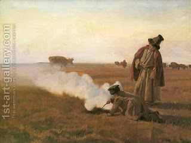

Yoma 52 - Inside the Holy of Holies
The High Priest, with the incense and the coals in his hands, would walk into the Holy of Holies. For that he had to move between the two curtains separating it from the Sanctuary, first, all the way in one direction and then, inside of Holy of Holies, in the opposite direction, until we he would reach the Ark.
Once he reached the Ark, he placed the shovel full of burning coals between the two poles of the Ark, heaped the incense on top of the coals, and the whole chamber filled with smoke. Then he walked back, still facing the Ark as the sign of respect, and before leaving the chamber he recited a short prayer. He would not prolong it, so as not to frighten the Jewish people by his delay.
Now, which Temple are we dealing with in this description? In the first Temple there were no curtains, and in the Second there was no Ark, since King Yoshiyahu hid it!? The answer is that we are talking about the Second Temple, and we did not mean the Ark itself, but rather the place where the Ark was before. But it says, "between the poles of the Ark!?" - Here too, understand "between the place of the poles."
Art: Smoke. Autumn by Jozef Chelmonski